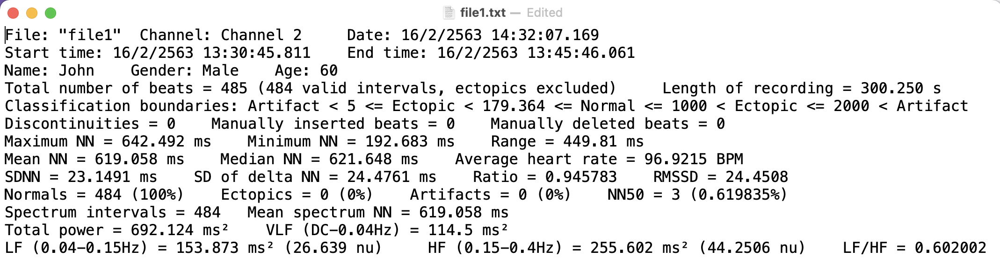

Overview
labChartHRV is an open-source software package written in R programming language.
It is an R package which contains functions for data import and manipulation of LabChart’s HRV module.
Functionality: Import and transform LabChart’s HRV report file (.txt) into a tibble (data frame).
Installation
You can install the development version of labChartHRV from GitHub with:
- (If you haven’t already), install remotes package by:
install.packages("remotes")- Install labChartHRV package by:
remotes::install_github("Lightbridge-KS/labChartHRV")Problems
This is a LabChart’s HRV report file (.txt) of 1 subject.

How to transform it into a 1-row data frame for further analysis?
Moreover, If we have multiple of these text files, how can we transform it into a data frame which has each rows corresponding to each subjects?
labChartHRV package has functions to solve this problems
Usage
This package comes with example data of LabChart’s HRV report file(s) in .txt.
# Path to a folder containing example HRV report text files
path_hrv <- labChartHRV_example("HRV")
dir(path_hrv)
#> [1] "file1.txt" "file2.txt" "file3.txt" "file4.txt"Read HRV report file(s) from .txt to a data frame by calling read_HRV_reports() with path to either single HRV report or folder containing multiple reports.
# Read multiple HRV report files from a folder
hrv_tbl <- read_HRV_reports(path_hrv)
hrv_tbl
#> # A tibble: 4 × 41
#> doc_id File_LabChart Channel Date Start_time End_time Name Gender Age
#> <chr> <chr> <fct> <chr> <chr> <chr> <chr> <fct> <int>
#> 1 file1.txt file1 Channel 2 16/2… 16/2/2563… 16/2/25… John Male 60
#> 2 file2.txt file2 Channel 2 26/3… 26/3/2563… 26/3/25… Max Male 56
#> 3 file3.txt file3 Channel 2 19/8… 19/8/2563… 19/8/25… Mary Female 65
#> 4 file4.txt file4 Channel 2 10/9… 19/10/256… 19/10/2… Tom Female 63
#> # … with 32 more variables: Beats_tot <dbl>, Rec_length <dbl>,
#> # Class_bound <chr>, Discontinuities <dbl>, Beats_inserted <dbl>,
#> # Beats_deleted <dbl>, NN_max <dbl>, NN_min <dbl>, NN_range <dbl>,
#> # NN_mean <dbl>, NN_median <dbl>, HR_avg <dbl>, SDNN <dbl>, SD_del_NN <dbl>,
#> # RMSSD <dbl>, Normals_count <dbl>, Ectopics_count <dbl>,
#> # Artifacts_count <dbl>, NN50_count <dbl>, NN50_percent <dbl>,
#> # Spec_intv <dbl>, Spec_mean_NN <dbl>, Power_tot <dbl>, VLF_freq <chr>, …hrv_tbl is a tibble (data frame)
Columns are variables including the results from time-and frequency-domain HRV analysis.
Rows corresponding to report files (i.e., each subjects).
# Variable names
names(hrv_tbl)
#> [1] "doc_id" "File_LabChart" "Channel" "Date"
#> [5] "Start_time" "End_time" "Name" "Gender"
#> [9] "Age" "Beats_tot" "Rec_length" "Class_bound"
#> [13] "Discontinuities" "Beats_inserted" "Beats_deleted" "NN_max"
#> [17] "NN_min" "NN_range" "NN_mean" "NN_median"
#> [21] "HR_avg" "SDNN" "SD_del_NN" "RMSSD"
#> [25] "Normals_count" "Ectopics_count" "Artifacts_count" "NN50_count"
#> [29] "NN50_percent" "Spec_intv" "Spec_mean_NN" "Power_tot"
#> [33] "VLF_freq" "VLF" "LF_freq" "LF"
#> [37] "LF_nu" "HF_freq" "HF" "HF_nu"
#> [41] "LF_HF"Variable’s description are store in this data frame:
HRV_vars_desc
#> # A tibble: 40 × 2
#> variable description
#> <chr> <chr>
#> 1 File_LabChart LabChart file name
#> 2 Channel Channel
#> 3 Date Date
#> 4 Start_time Start time
#> 5 End_time End time
#> 6 Name Name
#> 7 Gender Gender
#> 8 Age Age
#> 9 Beats_tot Total number of beats
#> 10 Rec_length Length of recording (s)
#> # … with 30 more rowsCollaboration
If you want to collaborate to add more function to this package, feel free to contact me at kittipos.sir@mahidol.edu.
Last updated: 2022-04-11